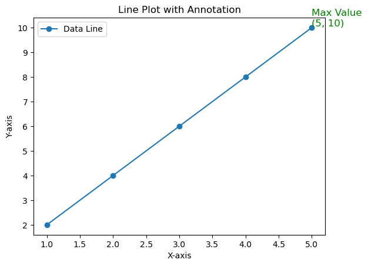
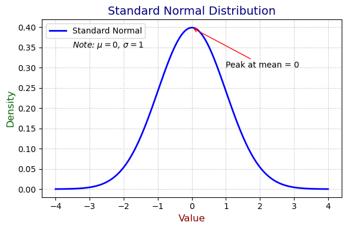
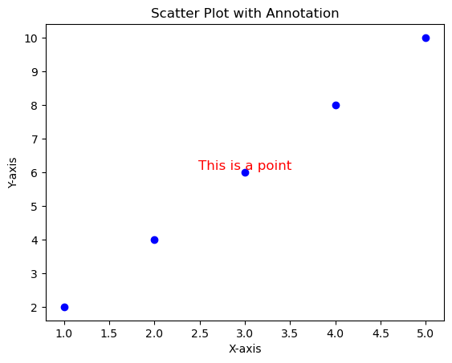

import matplotlib.pyplot as pltimport numpy as npfrom matplotlib.patches import Ellipse# Fixing random state for reproducibilitynp.random.seed(19680801)NUM =250ells = [Ellipse(xy=np.random.rand(2) *10, width=np.random.rand(), height=np.random.rand(), angle=np.random.rand() *360)for i inrange(NUM)]fig, ax = plt.subplots()ax.set(xlim=(0, 10), ylim=(0, 10), aspect="equal")for e in ells: ax.add_artist(e) e.set_clip_box(ax.bbox) e.set_alpha(np.random.rand()) e.set_facecolor(np.random.rand(3))plt.show()
import matplotlib.pyplot as plt# 创建一个简单的折线图plt.plot(x, y, marker='o', label='Data Line')# 找到最大值点max_x = x[-1]max_y = y[-1]# 在最大值点标注说明文字plt.text(max_x, max_y, f'Max Value\n({max_x}, {max_y})', fontsize=12, color='green', ha='left', va='bottom')# 设置标题和轴标签plt.title('Line Plot with Annotation')plt.xlabel('X-axis')plt.ylabel('Y-axis')# 显示图例plt.legend()# 显示图形plt.show()

import numpy as npimport matplotlib.pyplot as pltfrom scipy.stats import norm# 生成标准正态分布数据x = np.linspace(-4, 4, 500)y = norm.pdf(x, loc=0, scale=1)# 绘图plt.figure(figsize=(6, 4))plt.plot(x, y, label="Standard Normal", color="blue", linewidth=2)# 设置坐标轴标题和主标题plt.xlabel("Value", fontsize=12, color="darkred") # x 轴标题plt.ylabel("Density", fontsize=12, color="darkgreen") # y 轴标题plt.title("Standard Normal Distribution", fontsize=14, color="navy", loc="center") # 主标题# 添加图例plt.legend(loc="upper left", fontsize=10, frameon=True)# 添加注释（note）plt.annotate("Peak at mean = 0", xy=(0, norm.pdf(0)), xytext=(1, 0.3), fontsize=10, arrowprops=dict(arrowstyle="->", color="red"))# 添加自定义文字 textplt.text(-3.5, 0.35, "Note: $\\mu = 0$, $\\sigma = 1$", fontsize=10, color="black", style="italic")# 美化plt.grid(True, linestyle=":")plt.tight_layout()plt.show()

import matplotlib.pyplot as plt# 创建一个简单的散点图x = [1, 2, 3, 4, 5]y = [2, 4, 6, 8, 10]plt.scatter(x, y, color='blue')# 添加说明文字plt.text(3, 6, 'This is a point', fontsize=12, color='red', ha='center', va='bottom')# 设置标题和轴标签plt.title('Scatter Plot with Annotation')plt.xlabel('X-axis')plt.ylabel('Y-axis')# 显示图形plt.show()

16.12 参考资料
Johansson, R., 2024, Numerical Python: Scientific Computing and Data Science Applications with Numpy, SciPy and Matplotlib. Apress Berkeley, CA. Link, PDF (需要用校园 ID 登录), github